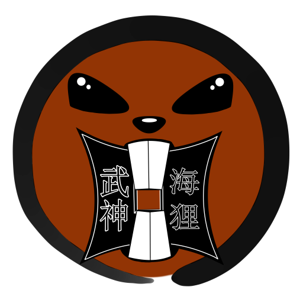

Bujinkan Umidanuki Dôjô
Melde dich mit deinem Vornamen und deiner 4-stelligen Dôjô-PIN an.

Alle Buyû zahlen gemeinsam ein! Bei 10 Taiden XP steigt der Dôjô Damm für alle auf die nächste Stufe.
Veredle dein Nafuda für den aktuellen Monat mit deinen Kuden XP (口伝):
Stärke dein Wissen für das Training! Jede richtige Antwort bringt dir +10 Kuden XP (口伝).
Tausche je 100 Kuden XP in 1 Taiden XP (🪵) um, um damit den gemeinsamen Dôjô Damm weiter auszubauen:
Spalte das fliegende Holz im Flug!
• Ab 15 Treffern: 50 Kuden XP zurück
• Ab 20 Treffern: 100 Kuden XP Gewinn!
Scanne nach dem Training den QR-Code bei David oder Isy mit deiner Handykamera (oder gib den Code ein), um dir +10 Taiden XP zu sichern:
1. Wähle die Trainingseinheit:
2. Trainierte Inhalte für die Schüler-Statistik antippen: